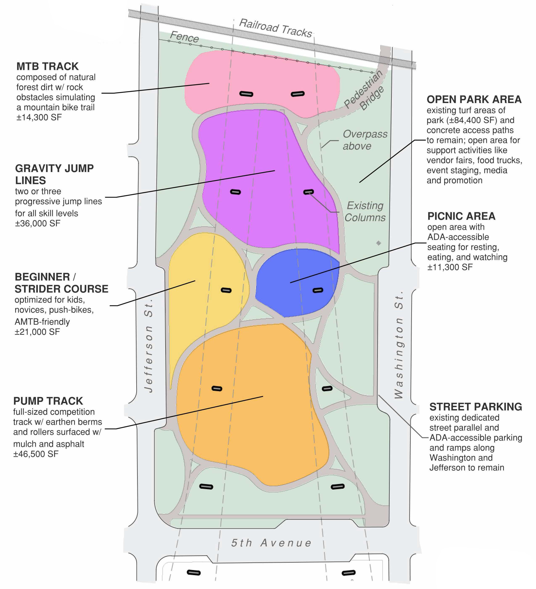

The WJ Pump Track is a community-driven project designed to create a safe, inclusive space for riders of all ages and skill levels. Built for bikes, boards, and movement, the track will serve as a hub for connection, growth, and outdoor fun.

A pumptrack is an all-weather asphalt-surfaced bike track, designed in a circular way that allows the rider to pump and corner their way around a space without pedaling. It incorporates “rollers” and “berms” that help riders generate speed by pumping. Pumptracks can include things like optional jumps, differing roller shapes, and features such as wall rides, to give the riders options to ride the track in different ways.
While designed around bicycles, pump tracks can be enjoyed by many user groups. Skateboards, scooters, roller blades, and even adaptive devices such as three wheeled bikes are all usable on pumptracks. By including both a beginner pumptrack and full size pumptrack, the park concept could be enjoyed by a wide variety of users from kids on push bikes to adults training to level up their skills. Providing a progression-based design will keep visitors engaged and excited across skill and ability levels. Pump tracks build community, build confidence, and are inclusive by design.
Beyond providing recreation for the local community, pumptracks are often sought out by passionate riders. Much like the skatepark nearby, users often will travel to visit these facilities. By creating a facility that appeals to a broad user base, the park will encourage tourism to the downtown area, supporting both local businesses and culture.
Please reach out below if you would like to help out!
Contact us below to find out how to help.